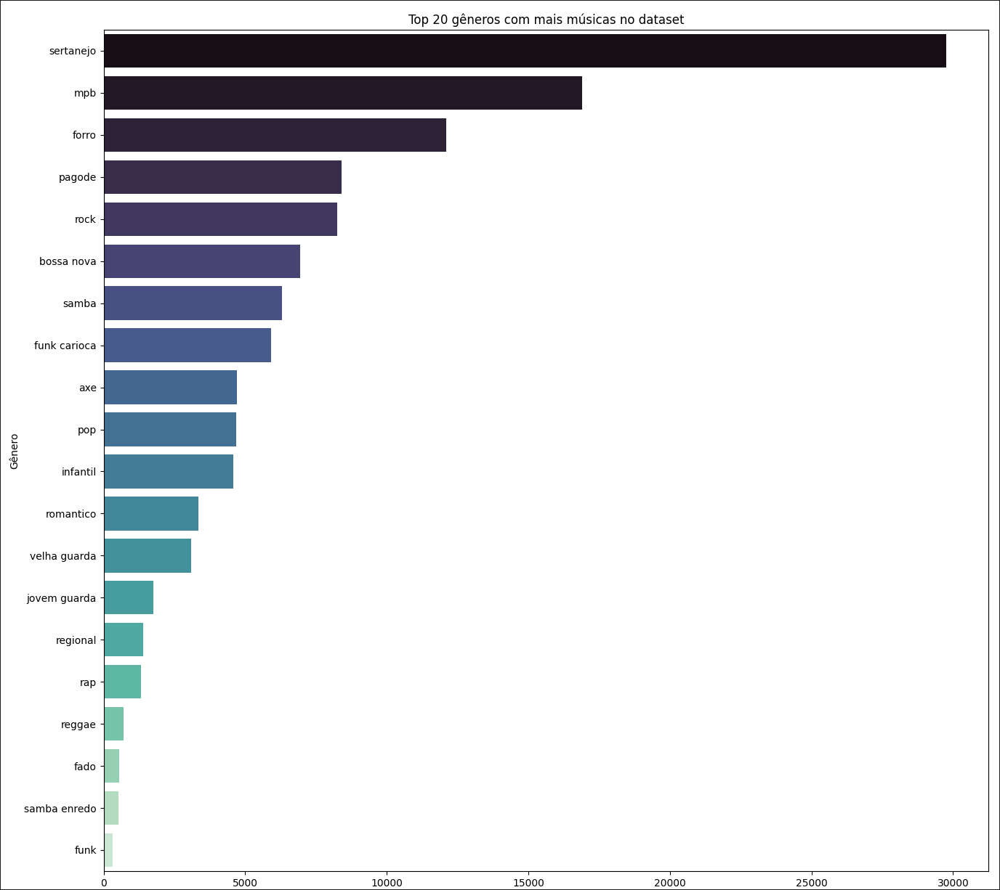

BIG DATA & DATA SCIENCE
Leonardo Rodrigues da Silva
Big Data
Big Data são conjuntos de dados enormes e complexos, que exigem ferramentas e técnicas avançadas para armazenamento, processamento e análise. São caracterizados por 5 Vs.
-
Volume
-
Velocidade
-
Variedade
-
Veracidade
-
Valor
Os 5 Vs da Big Data
-
database
Volume
Refere-se à quantidade massiva de dados armazenados e processados.
-
rocket_launch
Velocidade
Rapidez na geração, coleta e análise de dados em tempo real.
-
category
Variedade
Diferentes formatos (texto, vídeo, sensores) e fontes de dados.
-
fact_check
Veracidade
Confiabilidade e qualidade das informações coletadas.
-
finance_mode
Valor
Capacidade de transformar dados em insights úteis para decisões.
Big Datas Acessíveis
| Common Crawl | A Common Crawl é uma enorme base de dados com cerca de 2,5 Bilhões de páginas da web. |
| YFCC100M | O YFCC100M uma coleção de 100 milhões de fotos e vídeos para uso público e gratuito. |
| OpenStreetMaps | OpenStreetMap é um mapa open source gratuito e colaborativo que disponibiliza dados geográficos detalhados do mundo inteiro |
|
NASA APIs
NASA Datasets |
A NASA oferece grandes volumes de dados científicos e imagens de satélites acessíveis ao público, permitindo pesquisas e análises em áreas como clima, astronomia e meio ambiente. |
| Kaggle | Plataforma com milhares de datasets para treinamento de modelos e análise de dados. Datasets com imagens de erros em impressões 3D |
Data Science
Data Science ou Ciência dos Dados é área que usa estatística, algoritmos e computação para extrair insights valiosos a partir de grandes volumes de dados0.
Funcionalidades Principais
-
Suporte à decisão.
-
Previsão de tendências.
-
Personalização de serviços.
-
Otimização de processos operacionais.
-
Suporte à decisão.
É o uso de dados, modelos e ferramentas analíticas para fundamentar escolhas estratégicas ou operacionais.
-
Previsão de tendências.
Envolve algoritmos de Machine Learning para antecipar comportamentos futuros com base em padrões históricos.
-
Personalização de serviços.
É a adaptação de produtos, conteúdo ou experiências a preferências individuais, usando análise de comportamento.
-
Otimização de processos operacionais.
Uso de algoritmos para melhorar eficiência e reduzir custos em processos internos.
Exemplos
- Netflix analisa hábitos dos usuários e tendências a partir de modelos avançados tanto para decidir quais filmes e séries produzir quanto para personalizar o que cada usuário é recomendado.
- UberEats combina machine learning, modelagem estatística e dados meteorológicos para prever impacto tempestades ou feriados no tráfego e otimizar o processo de entrega.
Principais Ferramentas
Devido à complexidade do assunto, ferramentas convencionais como planilhas eletrônicas não são suficientes para lidar com grandes volumes de dados ou extrair insights avançados de forma eficiente. Sendo necessário ferramentas especializadas:
Processamento


Ferramentas para coletar e processar grandes volumes de dados.
Linguagens de Programação
Linguagens amplamente utilizadas para análise de dados e desenvolvimento de modelos.
Bibliotecas e Frameworks


Bibliotecas que facilitam a manipulação de dados e bibliotecas para construção de modelos de machine learning e deep learning
Bancos de Dados


Bancos de Dados estruturados e não estruturados
infraestrutura Necessária
- Armazenamento em nuvem ou servidores locais robustos.


Aplicações no mercado
- Saúde: Previsão de surtos e Personalização de tratamentos
Merative (IBM Watson Health): empresa americana que analisa dados do paciente para sugerir tratamentos personalizados - Finanças: Detecção e fraudes e análise de riscos. Bancos usam algoritmos de machine learning para analisar transações e identificar comportamentos fora do padrão.
- Varejo: Personalização de ofertas e otimização de estoque. A Amazon recomenda produtos com base no histórico de compras, navegação e usuários semelantes.
- Transporte: Otimização de rotas e manutenção preditiva. Waze e UPS usam dados de tráfego em tempo real, clima e localização dos veículos para ajustar rotas
Concluindo
| Vantagens | Limitações |
|---|---|
| Decisões mais informadas | Necessidade de infraestrutura robusta |
| Eficiência operacional aprimorada | Privacidade e segurança de dados |
| Experiências personalizadas para cliente | Dependência de profissionais qualificados |
| Consumo de Energia |
Tendências Futuras
- Integração crescente com Inteligência Artificial
- Aumento do uso de análise preditiva e prescritiva
- Expansão da análise de dados em tempo real.
Demonstração
Análise de dados de um Dataset com 146 mil músicas em português em um arquivo csv de 130Mb.
| Nome da Música | Artista | Gênero Musical | Letra da Música | |
|---|---|---|---|---|
| 0 | Carolina | Seu Jorge | MPB | Carolina é uma menina... |
| 1 | Epitáfio | Titãs | Rock | Devia ter amado mais... |
| ... | ... | ... | ... | ... |
| 146611 | Mas Que Nada | Miriam Makeba | World Music; Black Music; Blues | O ariá raió\nObá obá obá\n\n... |
Insigths Básicos sobre esses dados
- 702 gêneros diferentes
- 3.863 artistas diferentes
- 100.397 nomes de música diferentes
Após limpar e processar os dados, é possível extrair insights mais profundos!
| musica | artista | genero | letra | palavras | total_palavras | palavras_unicas | tamanho_medio | sentimento | robustez | |
|---|---|---|---|---|---|---|---|---|---|---|
| 0 | Carolina | seu jorge | mpb | Carolina é uma menina... | [carolina, menina, ...] | 433 | 101 | 4.401 | 0.238 | 1.515 |
| 1 | Epitáfio | titãs | rock | Devia ter amado mais... | [devia, amado, ...] | 152 | 59 | 4.29 | -0.625 | 1.999 |
| ... | ... | ... | ... | ... | ... | ... | ... | ... | ... | ... |
| 122790 | Hino 97 - Invocação | xamã gideon dos lakotas | world music | Esclarecimentos Maiores... | [esclarecimentos, maiores, ...] | 1784 | 526 | 4.279 | 0.486 | 1.887 |
- 27 gêneros diferentes
- 3.227 artistas diferentes
- Total de 18.514.947 palavras
- 130.610 "palavras" únicas
- Média de 4,03 characteres por palavras
Palavras mais ocorrentes
vs
Palavras mais comuns
Sertanejo
29.769 Músicas
| amor | 42543 |
| coração | 21555 |
| vida | 16302 |
| gente | 12085 |
| saudade | 10519 |
| amor | 16238 |
| coração | 12011 |
| vida | 9134 |
| gente | 6145 |
| saudade | 5747 |
Infantil
4.578 Músicas
| amor | 3004 |
| deus | 2803 |
| coração | 2306 |
| mundo | 1972 |
| vamos | 1944 |
| amor | 1196 |
| coração | 1180 |
| mundo | 977 |
| vida | 958 |
| deus | 819 |
Regional
1.408 Músicas
| amor | 738 |
| vida | 719 |
| grande | 689 |
| rio | 601 |
| coração | 601 |
| vida | 486 |
| coração | 414 |
| grande | 387 |
| amor | 379 |
| rio | 311 |
Funk Carioca
5.918 Músicas
| amor | 3851 |
| vida | 3160 |
| senta | 2639 |
| bonde | 2356 |
| desce | 2321 |
| vida | 1356 |
| amor | 1297 |
| coração | 931 |
| mulher | 885 |
| fica | 847 |
Sequências de palavras mais frequentes
minha vida aparece em 7936 músicas um total de 11696 vezes
nunca mais aparece em 4846 músicas um total de 3313 vezes
coisa mais linda aparece em 196 músicas um total de 281 vezes
posso mais viver assim aparece em 54 músicas um total de 87 vezes
creu creu creu creu creu aparece em 2 músicas um total de 119 vezes
laiá laiá laiá laiá laiá aparece em 20 músicas um total de 90 vezes
Gráficos
